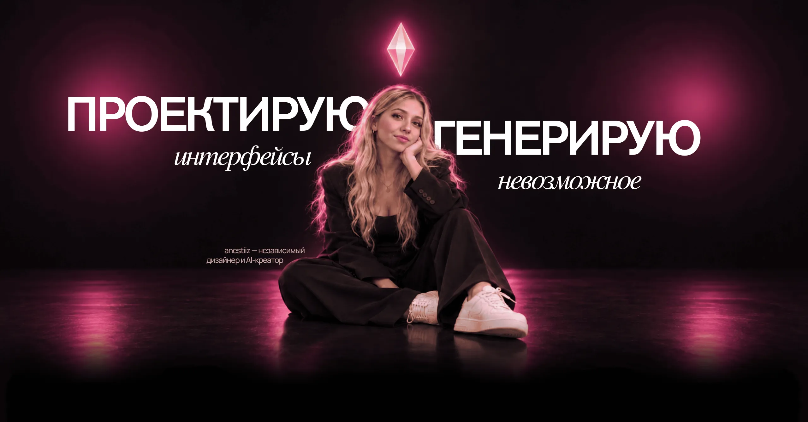

Проектирую цифровые продукты
и создаю AI-визуалы — от идеи
до финального кадра.
Продуктовый дизайнUX/UI-дизайнМобильные приложенияСайтыДизайн-системыПрототипированиеПрезентацииSocial MediaПродуктовый дизайнUX/UI-дизайнМобильные приложенияСайтыДизайн-системыПрототипированиеПрезентацииSocial Media
AI-КреативыAI-видеоНейрофотосессииКреативные концепцииАрт-дирекшнMotion-дизайнВизуальный сторителлингAI-КреативыAI-видеоНейрофотосессииКреативные концепцииАрт-дирекшнMotion-дизайнВизуальный сторителлинг


Веб-дизайн
Смотреть кейсы
Дизайн приложений
Смотреть кейсыAI-креативы
Смотреть работы
Презентации
Смотреть работы


МТС · CVM
Смотреть кейсыОт задачи
до передачи.
Четыре понятных этапа: сначала фиксируем задачу, затем выбираем направление, создаём решение и готовим результат к передаче.
- 01
Задача
Обсуждаем цель, аудиторию, материалы, сроки и объём работы.
- 02
Направление
Согласуем структуру, концепцию или визуальный подход.
- 03
Создание
Разрабатываю материалы и показываю промежуточные результаты на согласованных этапах.
- 04
Передача
Вношу согласованные правки и передаю материалы в нужных форматах.
5+ лет опыта
Работаю в дизайне с 2021 года. Совмещаю продуктовые интерфейсы, руководство командой и AI-Креативы — от пользовательского сценария до финального кадра.
-
2023 — сейчас3 годаМТС · CVMРуководитель направления дизайнаС августа 2024. Ранее — UX/UI-дизайнер: октябрь 2023 — август 2024.
Развитие отношений с клиентами и персонализированные предложения. С 2024 года веду команду дизайнеров и продолжаю работать руками.
- Организация работы команды, обсуждение решений и проверка макетов.
- Проектирование персонализированных страниц, лендингов и продуктовых сценариев.
- Проработка логики, состояний, ошибок и адаптивных версий.
- Единообразие интерфейсов и работа с компонентами.
- Взаимодействие с продуктом, маркетингом, продажами, поддержкой и разработкой.
- Передача макетов в разработку через Figma DevMode.
- Регулярные внутренние демонстрации дизайн-решений.
Из проектов- Внутренние платформы — запуск маркетинговых кампаний и публикация лендингов.
- Страницы персонализированных предложений тарифов, услуг, подписок и устройств.
- Путь перехода со своим номером — от ввода номера до выбора магазина на карте.
- Виджет NBA для операторов — сценарии подключения, обработки ошибок и аналитики продаж.
-
2023 — 20252 годаCodeAxolotПроджект-менеджер · Дизайнер · AI-креаторДизайн, управление проектами и AI-контент.
В CodeAxolot я два года совмещала три роли: проджект-менеджера, дизайнера и AI-креатора. Мой опыт здесь объединял управление проектами, работу над дизайном и создание контента с использованием искусственного интеллекта.
- Управление проектами — роль проджект-менеджера.
- Дизайн — работа над дизайн-задачами проектов.
- AI-Креативы — создание контента с использованием ИИ.
-
2022 — 20231 годFlying GekkoUX/UI-дизайнерСентябрь 2022 — июль 2023
Работа над пользовательскими интерфейсами и сценариями — развитие практики UX/UI и цифровых продуктов.
- Сбор и уточнение требований.
- Проработка пользовательских сценариев.
- Создание интерфейсов.
- Сопровождение реализации.
- Тестирование и оптимизация решений.
-
2021 — 20232 годаHi-Tech InteriorГрафический дизайнерМарт 2021 — апрель 2023
Начало профессионального пути. Работа с графическими материалами и печатными носителями.
От продуктового дизайна до финального кадра — один связный рабочий процесс.
30
инструментов
в работе
в работе
Дизайн интерфейсов
Веб
Монтаж и пост
AI-видео
AI-графика
AI-аудио
AI-текст и сценарии
Я соединяю
логику дизайна
и эмоцию креатива.
Я anestiiz, UX/UI-дизайнер, руководитель направления дизайна и AI-креатор.
Мой опыт объединяет продуктовый дизайн, руководство командой, управление проектами и создание AI-контента. В МТС я выросла от UX/UI-дизайнера до руководителя направления дизайна, а в CodeAxolot два года совмещала роли проджект-менеджера, дизайнера и AI-креатора.
От первого пользовательского сценария до последнего кадра мне важно, как весь опыт складывается в одно целое.
01 / AI VIDEOS
Создание AI-видео
Разные истории, стили и форматы — с чётким креативным направлением от первой идеи до финального монтажа.
- Брендовые и продуктовые ролики
- Реклама в социальных сетях
- Истории персонажей и анимация
02 / MOBILE APP DESIGN
Мобильные продукты
Продуманные сценарии и выразительные интерфейсы, которые делают мобильный продукт интуитивным.
- UX/UI-дизайн приложений
- Онбординг и ключевые сценарии
- Дизайн-системы и прототипы
03 / WEB DESIGN
Сайты, которые связывают
Понятная структура и визуальная айдентика, которая одинаково работает на десктопе и мобильных устройствах.
- Сайты и лендинги
- Адаптивный UX/UI
- Интерактивные прототипы
Моменты вне макетов.
AI в процессе.
Мой контроль на каждом этапе.
Использую AI для поиска визуальных направлений, создания изображений, видео и быстрых итераций. На мне — концепция, логика, отбор и финальная доработка. Каждый материал проверяю на соответствие задаче, единство стиля и качество деталей.
AI + дизайн
Продуктовое мышление
Анимация и UI
Тексты и тон
Мы живём в моменте, когда скорость идеи важнее её объёма. Раньше между «придумал» и «показал» стояли недели — сегодня хороший дизайнер с AI закрывает этот путь за один вечер, без потери качества. Кто не умеет собирать этот стек — остаётся на шаг позади.
Почему AI важен именно сейчас.
Рынок ускорился в разы: пользователи ждут продукт, который выглядит и работает как топовое приложение из App Store, а не как «первый MVP». Без AI такой уровень раньше стоил команды из 5 человек и трёх месяцев.
Сегодня один дизайнер с правильно собранным AI-стеком закрывает исследование, копирайт, айдентику, UI-кит, прототип и моушен — за срок, в который команда только пишет ТЗ.
Опыт + AI = продукт, а не картинки.
AI без опыта — это красивые слайды без логики. Опыт без AI — это медленно и дорого. Ценность на стыке: я знаю, как устроен продукт, что продаёт, где ломается пользователь — и направляю AI туда, где он реально усиливает.
AI генерирует варианты, я отсекаю мусор, оставляю то, что работает на задачу клиента, и собираю в цельный продукт с единой интонацией.
Почему клиент так не сможет сам.
Клиенту доступны те же AI-инструменты — но не доступен вкус, насмотренность и продуктовое мышление. AI даёт много «правильно», но не отличает «правильно» от «точно».
Без насмотренности выходит средний продукт с AI-налётом. Со мной — продукт, у которого есть характер, логика и уверенность в каждом пикселе.
Как это выглядит в работе.
Исследование ускоряется в 3–5 раз, айдентика собирается за день, тексты и интонация — сразу под аудиторию. Моушен, иллюстрации и 3D — там, где раньше был плейсхолдер.
Итог: клиент платит не за часы, а за результат — продукт уровня, который окупает вложение с первого запуска.
Обсудим
ваш проект.
Посмотрю задачу и свяжусь с вами, чтобы уточнить детали и предложить следующий шаг.